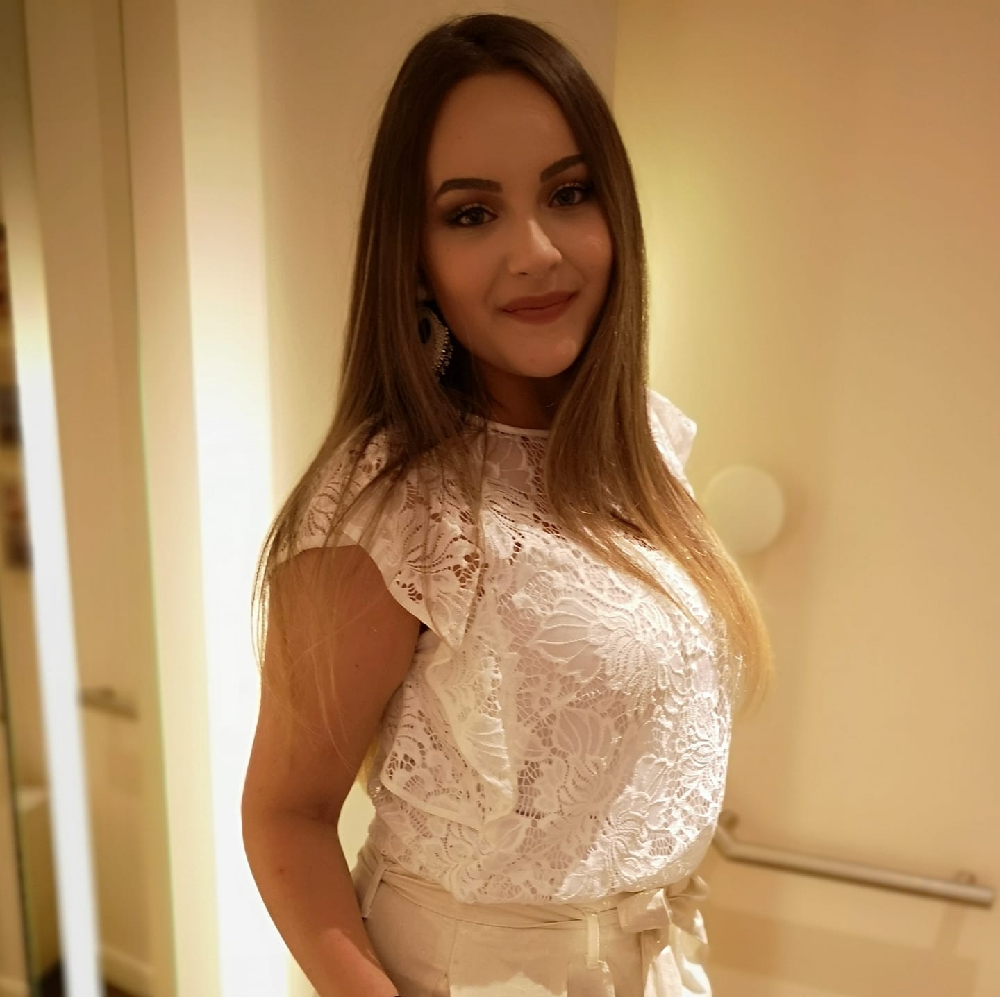

Hey, moi c'est Mauréanne !

Etudiante en master 2 marketing digital, j'effectue mon année en alternance dans l'entreprise VeryShop.
Dans la vie j'aime la danse, la musique, profiter avec mes amis et voyager.
Site de VeryShop
Etudes
Bac STMG option marketing (2016)
BTS Commerce International (2016-2018)
Bachelor Responsable Développement Commercial (2018-2019)
Master Marketing and Business Development (2019-2020)
Master Marketing Digital (2020-2021)
Expériences
Stage assistante développement commercial en Irlande (Mai-Juin 2017)
Stage assistante gestion des opérations d'import et d'export pour l'entreprise Cevrai Laboratoire à Sète (Janvier 2018)
Alternance en conseillère de vente pour l'entreprise Darjeeling à Nîmes (Juillet 2018- Août 2019)
Assistante Marketing Digital pour l'entreprise Ohmyliss à Malte (Juillet 2020-Août 2020)
Alternance community manager et business developer pour VeryShop à Beynost (Octobre 2020- Septembre 2021)